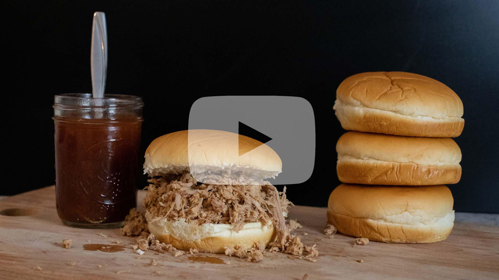

Carolina Pulled Pork
Carolina Rub
- - 1/4 cup paprika
- - 2 tablespoons salt
- - 2 tablespoons white sugar
- - 2 tablespoons brown sugar
- - 2 tablespoons chili powder
- - 2 tablespoons ground black pepper
- - 1 tablespoon cayenne pepper
Pulled Pork
- - Pork shoulder (whatever size works best for you)
Directions:
- 1. In a bowl, combine all seasonings and whisk thoroughly until all seasoning is blended together.
- 2. Generously apply rub to outside of roast, cover all surface space of the roast with rub.
- 3. Place into a crockpot on low for 6 - 8 hours, or until easily shreds apart.
- 4. Remove meat from crockpot to allow to cool for 10 minutes.
- 5. Shred the pork, removing any chunks of fat from the meat. Discard the chunks of fat.
- 6. Once separated, shred pork. *Suggestion - use an electric beater to really shred the pork*
- 7. Serve and enjoy.